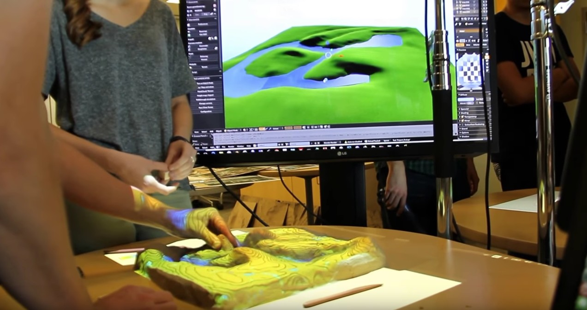
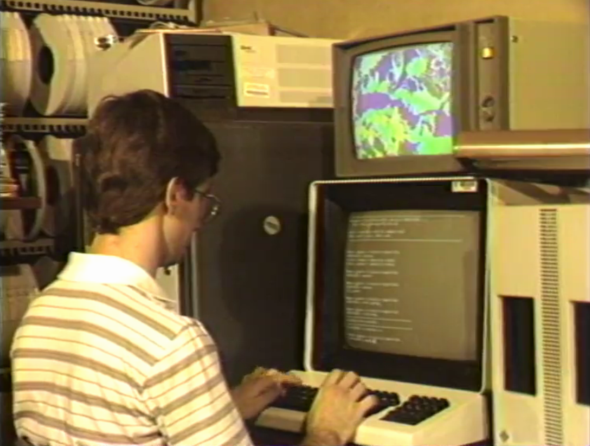
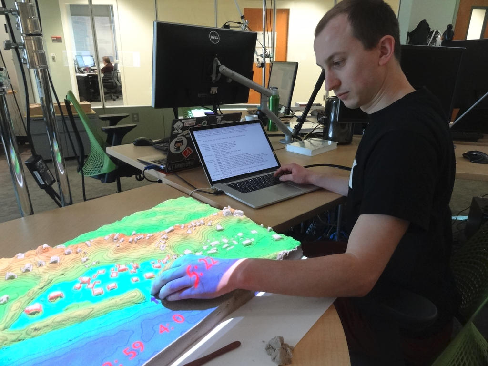
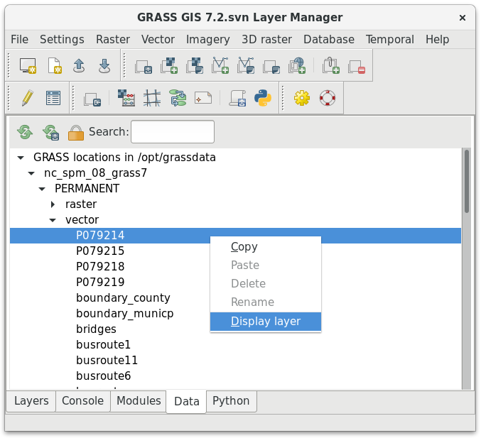
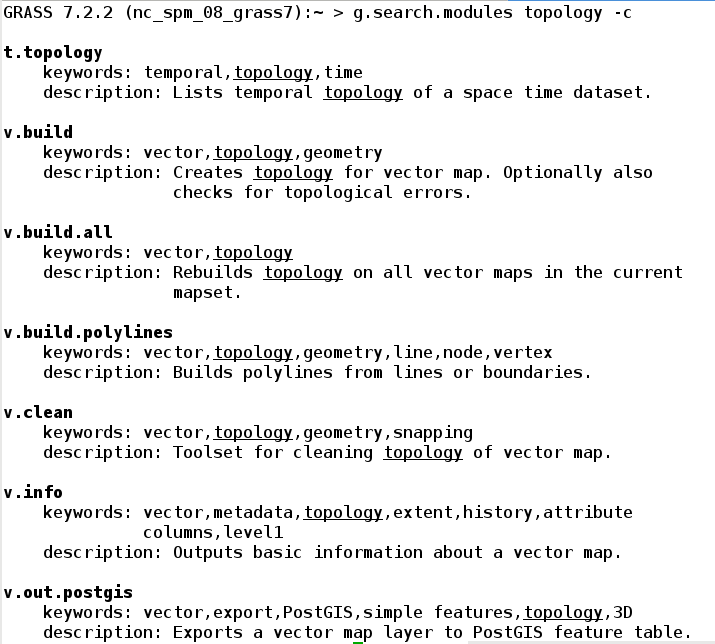
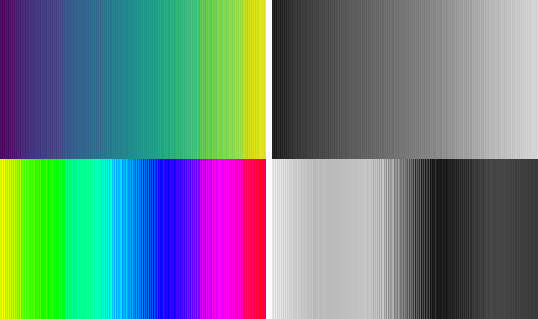
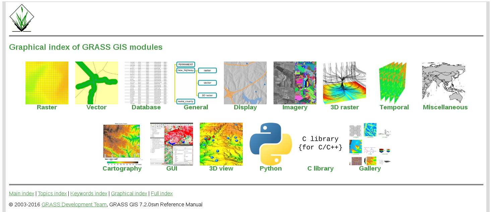
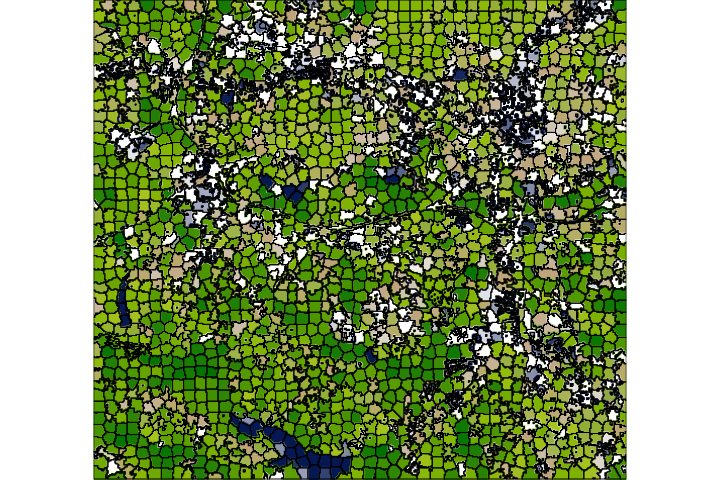
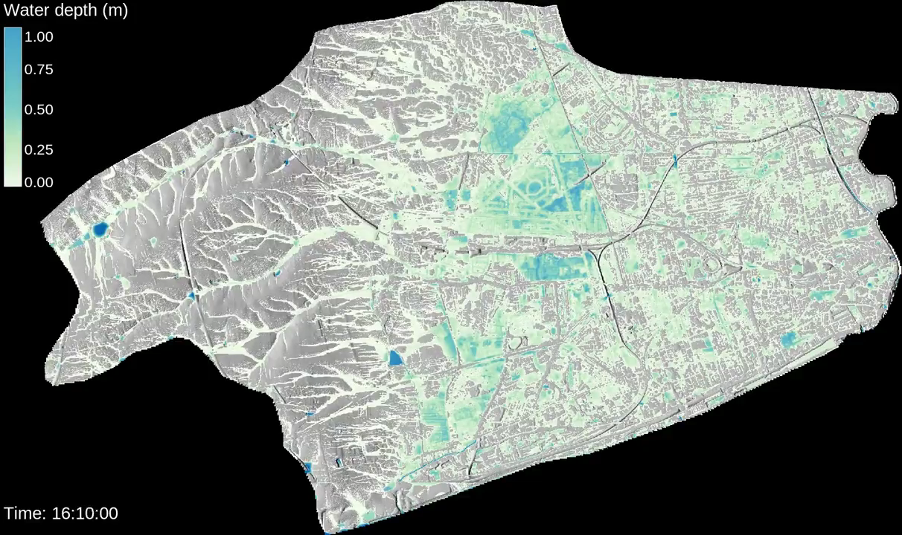

GRASS GIS
Advanced geospatial technologies:
The new powerful GRASS GIS 7.2 release
North Carolina State University
NCSU
GeoForAll Lab
at
Center for Geospatial Analytics
Markus Neteler - Mundialis GmbH &, Co. KG;
Anna Petrasova - NCSU, Helena Mitasova - NCSU

FOSS4G 2017 Boston
Runs everywhere
- from Raspberry Pi to HPC cluster
- Linux, Mac, Windows, ...
- GCC, clang, C, C++98, C++11, C++14
Interface: CLI
The baseline interface for efficiency and reproducibility

Interface: GUI
The interface for beginners and desktop

Tangible Landscape
3rd party tangible user interface to GRASS GIS and Blender
by NC State University, Center for Geospatial Analytics
APIs
- native:
- C
- Python
- command line
- 3rd party:
- R (rgrass7 package)
- Ruby (grassgis gem)
- Java (JGrasstools library)
- as backend:
- QGIS Processing (Python and R APIs)
- gvSIG JGrasstools Spatial Toolbox
Functionality
- Hydrology
- Remote sensing/imagery/image processing
- 3D rasters, space-time cubes
- Spatio-temporal
- Lidar
- Topological vectors, network analysis
- Integrated visualizations, 3D visualizations
- Relational databases (SQLite, PostgreSQL, PostGIS, MySQL)
Return of investment
2002 code running in 2017?
version 5.0 code works as is in 7.2:r.mapcalc depr.bin="if((elev - fill)< 0., 1, 0)"
although there is a better way to write it:
r.mapcalc "depr_bin = if((elev - fill) < 0., 1, 0)"
Command line prevails: 1987
Command line prevails: 2017
Scientific foundation
references to related scientific papers associated with a module
GRASS GIS 7.2
- Recent releases:
- 7.2.0 (December 2016) 1,900 commits since 7.0
- 7.2.1 (May 2017) 150 commits since 7.2.0
- Upcoming releases:
- 7.2.2 (summer/fall 2017)
- 7.4.0 (fall/winter 2017)
- 8.0.0 (panning started)
New features in 7.2
trac.osgeo.org/grass/wiki/Grass7/NewFeatures72Data catalog
g.gui.datacatalog - browse and manipulate raster and vector maps
by Tereza Fiedlerova and Anna Petrasova
Simple Python Editor
Create Python scripts and modules with ease

by Vaclav Petras
Vector legend
d.legend.vect - automatic and customizable legends

by Adam Laza and GSoC mentors
Advanced search in command line
g.search.modules - search for modules
by Jachym Cepicky
3D raster flows and gradients
r3.flow - flow lines in a 3D raster
r3.gradient - gradients in a 3D raster
by Anna Petrasova
Simplified batch processing
grass72 /grassdata/nc_spm/work1 --exec \
r.viewshed input=elevation output=viewshed \
coordinates=642964,222890
by Vaclav Petras
Temporal Algebra

by Thomas Leppelt and Soeren Gebbert
Other improvements in 7.2
viridis as default color table
Perceptually uniform color table
by Vaclav Petras (following Matplotlib's example)
Links to source code

by Luca Delucchi
Graphical index
by Vaclav Petras; designer needed!
New addons

SLIC
i.superpixels.slic - image segmentation using SLIC superpixels
by Rashad Kanavath and Markus Metz
Supervised classification
r.learn.ml - classification with Python scikit-learn package
by Steven Pawley
Itzï
Hydrologic and hydraulic model of surface water flow
by Laurent Courty
FUTURES
r.futures - set of modules for urban spread modeling

by NC State University, Center for Geospatial Analytics
Parallelized solar radiation
r.sun.mp - parallelized version of r.sun

by Jaroslav Hofierka et al.
Resources
- Full list of core modules and official addon modules
- Tutorials:
-
Books (English):
- Open Source GIS: A GRASS GIS Approach
- Tangible Modeling with Open Source GIS
- GIS-based Analysis of Coastal Lidar Time-Series
- Open Source Approaches to Spatial Data Handling
- Community and commercial support
Twitter: vaclavpetras
GitHub: wenzeslaus